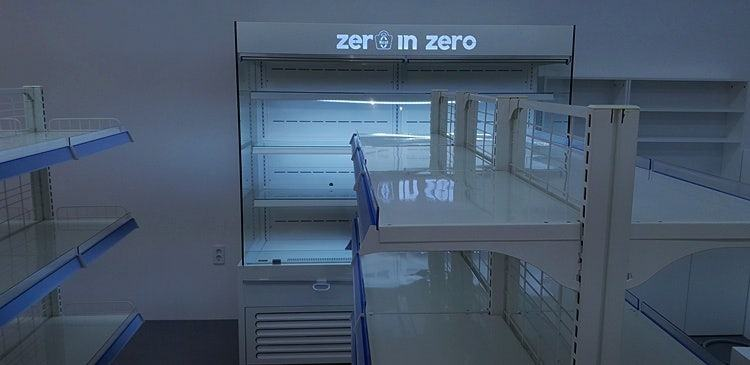
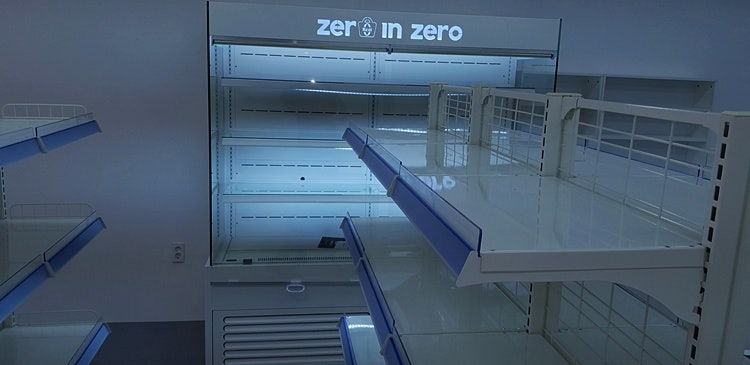
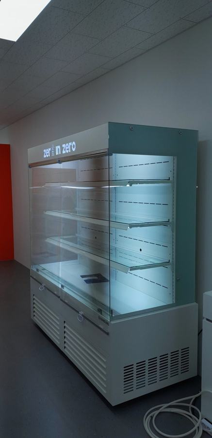
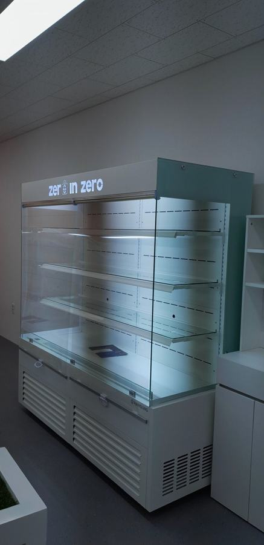
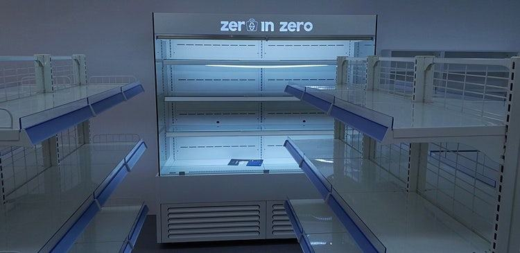
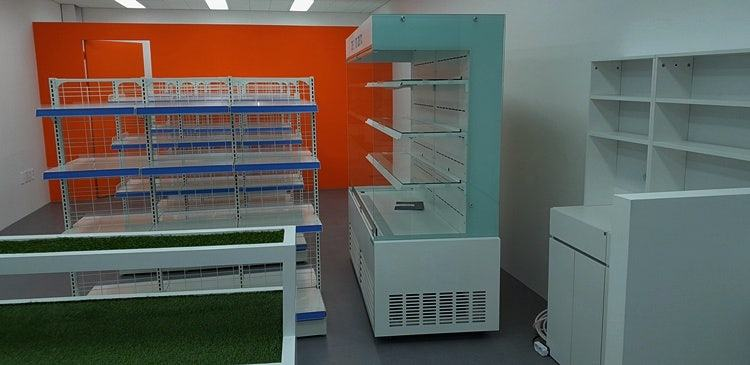
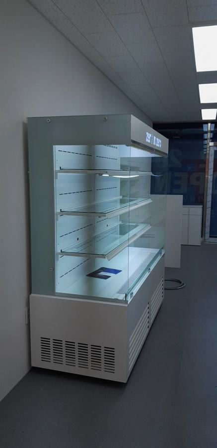
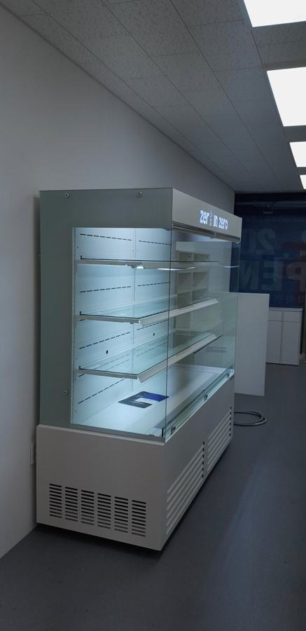
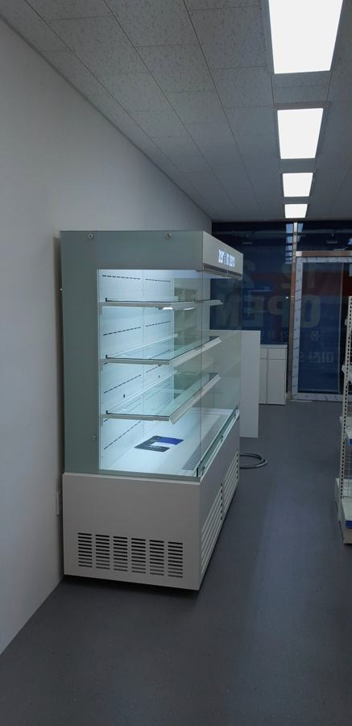

오픈쇼케이스
오픈쇼케이스 디자인, 색·마감·조명으로 매장 분위기 맞추기

오픈쇼케이스 디자인은 프레임 색과 마감 소재, 조명 색, 선반 구성, 벽 매립 여부 네 가지를 매장 인테리어에 맞추는 것이 핵심입니다. 문이 없는 구조라 전면 개구부와 에어커튼, 나이트커버 같은 냉기 장치도 디자인 단계에서 함께 정해야 보기 좋고 유지비도 덜 듭니다.
안녕하세요. 매장마다 다른 오픈쇼케이스를 설계하고 제작하는 한성쇼케이스입니다.
오픈쇼케이스는 문이 없어 상품이 그대로 드러나기 때문에, 매장에 들어서는 순간 가장 먼저 눈에 들어오는 장비입니다.
그래서 인테리어를 공들여 마친 사장님일수록 "기성품을 놓으면 분위기가 깨질 것 같다"는 고민을 많이 하십니다.
오늘은 오픈쇼케이스를 매장 분위기에 맞추는 디자인 요소와, 보기 좋으면서도 냉기를 잘 지키는 설계 포인트를 함께 살펴보겠습니다.
1. 프레임 색과 마감 소재
화이트·우드 톤의 따뜻한 매장에는 밝은 프레임이나 우드 마감이 자연스럽게 섞이고, 콘크리트나 메탈 소재가 많은 매장에는 블랙이나 스텐 마감이 잘 어울립니다.
쇼케이스만 따로 튀지 않도록 카운터, 벽면 마감재와 색을 맞춰 보세요.
편의점이나 마트처럼 상품이 주인공인 매장은 프레임을 단순하게 두고 진열 면을 넓히는 편이 낫습니다. 카페나 샐러드 매장처럼 분위기가 중요한 곳은 측면 마감과 상단 몰딩까지 신경 쓰면 완성도가 달라집니다.
- 매장 바닥·벽·카운터 마감 사진을 모아 두세요.
- 쇼케이스가 주인공인지, 배경인지 먼저 정하세요.
2. 조명 색과 선반 구성
조명 색은 상품이 보이는 인상을 바꿉니다. 디저트와 빵은 은은한 주광색에서 따뜻해 보이고, 샐러드나 음료는 밝은 백색에서 신선하고 깔끔해 보입니다.
같은 매장 안에서도 진열 품목에 따라 조명을 다르게 고를 수 있습니다.
선반은 유리로 하면 가볍고 시원해 보이고, 탈부착이 되면 청소도 편합니다. 병음료와 디저트를 함께 둔다면 선반 간격을 조절할 수 있게 설계해 두는 것이 좋습니다.
조명은 위치도 중요합니다. 상단에만 조명을 두면 아래 칸 상품이 어둡게 보일 수 있어, 선반마다 조명을 넣을지 함께 정해 보세요.
조명 열이 상품에 직접 닿지 않도록 배치하는 것도 설계 단계에서 챙길 부분입니다.


3. 매립형과 로고 각인
벽면이나 카운터 뒤에 매립하면 쇼케이스가 인테리어의 일부처럼 보이고, 옆 틈에 먼지가 쌓이지 않습니다.
대신 열이 빠져나갈 통로를 반드시 확보해야 하므로 시공 전에 설계를 맞춰야 합니다.
상단에 브랜드 로고를 넣으면 따로 간판을 달지 않아도 자연스럽게 매장 이름이 보입니다. 카운터 뒷벽이 비어 있는 매장이라면 포인트 역할도 해 줍니다.
- 매립 시 뒷면·상단 통풍 공간을 확인하세요.
- 로고 파일을 미리 준비해 두세요.
4. 디자인과 냉기 유지를 같이 설계하기
오픈쇼케이스는 앞면이 열려 있어 개구부를 넓게 낼수록 시원해 보이지만, 그만큼 냉기가 빠져나갈 면적도 커집니다.
보기 좋은 비율과 냉기 유지 사이에서 개구부 높이와 폭을 정하는 것이 디자인의 첫 단계입니다.
쇼케이스 전문 디자이너가 상주해 있어 매장 도면과 인테리어 사진을 보고 외관과 냉기 구조를 함께 설계해 드립니다.
디자인만 먼저 정하고 냉각 구조를 나중에 끼워 맞추면 원하는 모양이 나오지 않을 수 있습니다.
체크리스트
- 매장 마감재와 어울리는 프레임 색
- 진열 품목에 맞는 조명 색
- 유리 선반 단수와 간격 조절 여부
- 매립 여부와 통풍 공간
- 전면 개구부 크기와 나이트커버 적용
현장에서 자주 보는 경우: 예쁘게 놓았는데 냉기가 약하다는 문의
오픈쇼케이스를 들인 뒤 "전기세가 많이 나온다", "앞줄 상품이 덜 차갑다"는 문의를 주시는 매장에 가 보면, 출입문 바로 앞에 놓였거나 천장 송풍구 바람이 전면을 직접 때리는 경우가 많습니다.
문이 없는 구조라 주변의 따뜻한 공기가 계속 스며들기 때문에 놓인 자리가 큰 차이를 만듭니다.
앞면을 덮는 공기막인 에어커튼은 바람이 너무 약하면 실내 공기가 파고들고, 너무 강하면 내부 냉기를 밖으로 밀어냅니다.
송풍구 각도와 선반 위치가 어긋나면 공기막이 중간에서 흐트러지기도 합니다. 영업이 끝난 뒤 전면을 덮는 나이트커버도 매일 꾸준히 내려야 효과가 납니다.
그래서 디자인을 정할 때 개구부 높이와 폭, 송풍구 위치, 나이트커버 구조를 함께 보셔야 합니다.










자주 묻는 질문
매장 인테리어 색에 맞춰 프레임 색을 바꿀 수 있나요?
가능합니다. 블랙, 화이트, 스텐, 우드 톤 등 매장 마감에 맞춰 프레임 색과 소재를 정할 수 있습니다.
인테리어 사진을 보내 주시면 어울리는 조합을 제안해 드립니다.
오픈쇼케이스에 나이트커버를 꼭 달아야 하나요?
영업 후에도 상품을 넣어 두는 매장이라면 권해 드립니다. 다만 디자인에 따라 커버를 넣을 자리가 달라지니 제작 단계에서 함께 정하시는 것이 좋습니다.
벽에 매립하면 고장이 잦아지지 않나요?
열이 빠져나갈 통로를 확보하지 않으면 냉각기에 부담이 갈 수 있습니다. 시공 전에 통풍 구조를 맞춰 설계하면 매립형으로도 안정적으로 쓰실 수 있습니다.
매장 조건에 맞춰 만드는 한성쇼케이스
원하시는 제품 사진과 설치할 공간 사진만 보내 주셔도 매장에 맞는 구성을 추천해 드립니다.
- 전국 240여 개 A/S 전담 센터 운영
- 본사 대량 자재 매입으로 품질 대비 합리적인 가격
- 유럽제·삼성 냉각 콤프레셔 적용
- 국내 최초 쇼케이스 전문 디자이너 상주
매장 폭과 원하는 진열 구성을 알려 주세요. 실측과 견적을 안내해 드립니다.
031-986-2458